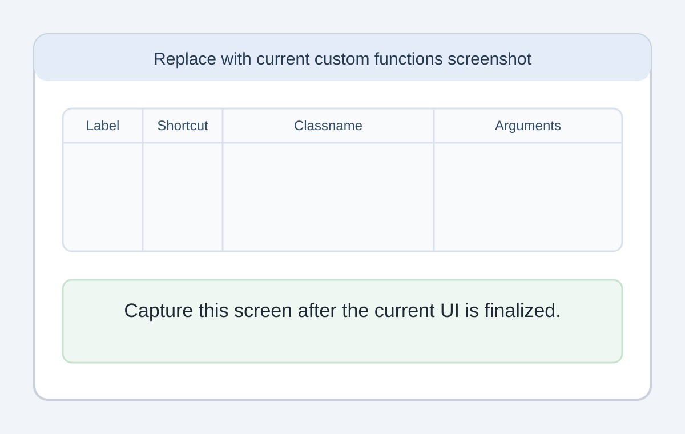

Custom Functions
Custom functions are optional shortcuts that can be assigned to F2 through F12.
If your team does not use custom functions, you can ignore this page.
What custom functions are for
Custom functions can be used for actions such as:
- opening a related web page
- creating a task from a preset value
- running a team-specific helper action
How to set them up
- Press
F1. - Open the Updates/Custom tab.
- Click Change...
- Add or edit the function details.
- Click Save.

What each field means
Label
The user-friendly name for the custom function.
Shortcut
The function key that runs it, from F2 to F12.
Classname
The custom function implementation to use from the DLLs in the CustomFunctions folder.
Arguments
Optional text or parameters needed by that custom function.
Where TinyTracker looks for custom functions
TinyTracker loads custom function libraries from the CustomFunctions folder inside the TinyTracker data folder.
If you want to write your own DLLs, see Creating custom functions.